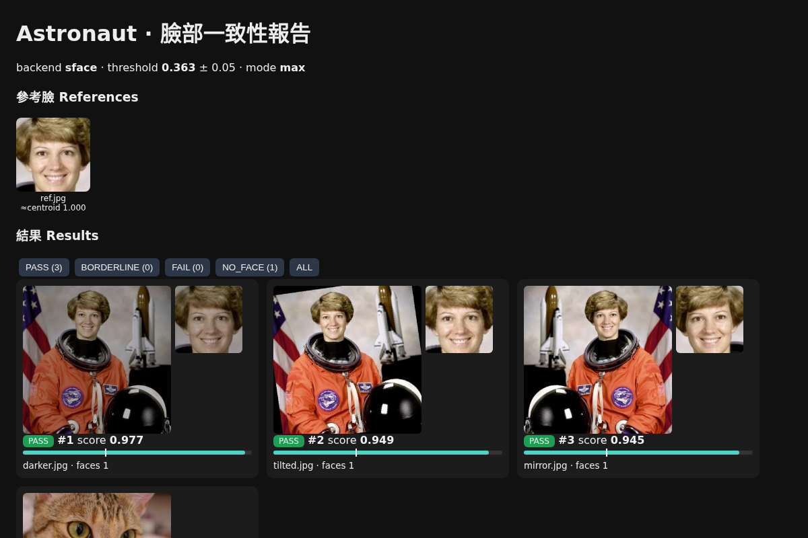

ai face_consistency
Pro角色臉部一致性評分（YuNet + SFace）
安裝JiangKit Pro（即將推出）
指令範例jiang ai face_consistency --ref ref.jpg --images gen/ -o reports/face

工具 /
ai face_consistency角色臉部一致性評分（YuNet + SFace）
安裝JiangKit Pro（即將推出）
指令範例jiang ai face_consistency --ref ref.jpg --images gen/ -o reports/face

ai auto_tagger本機 CLIP 自動標籤、分類、以文搜圖
安裝JiangKit Pro（即將推出）
$ jiang ai auto_tagger imgs/ --search 'a cup of coffee'
[model] open_clip:ViT-B-32/laion2b_s34b_b79k; 4 images; groups: ['shot', 'scene', 'style', 'subject']
[embed] 4/4 new images
[search] 'a cup of coffee': coffee.jpg(0.311), chelsea.jpg(0.111), rocket.jpg(0.079), astronaut.jpg(0.075)
[done] /tmp/jk_demo/tags/tags.csv